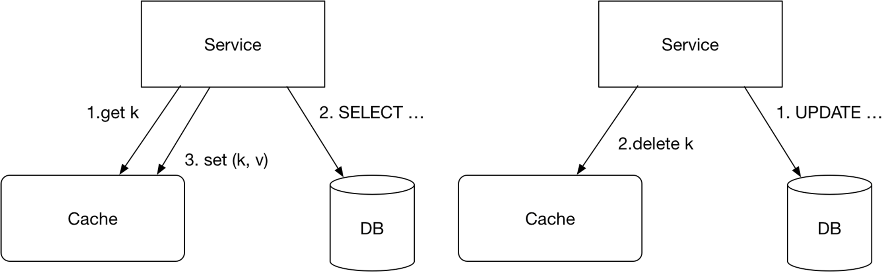
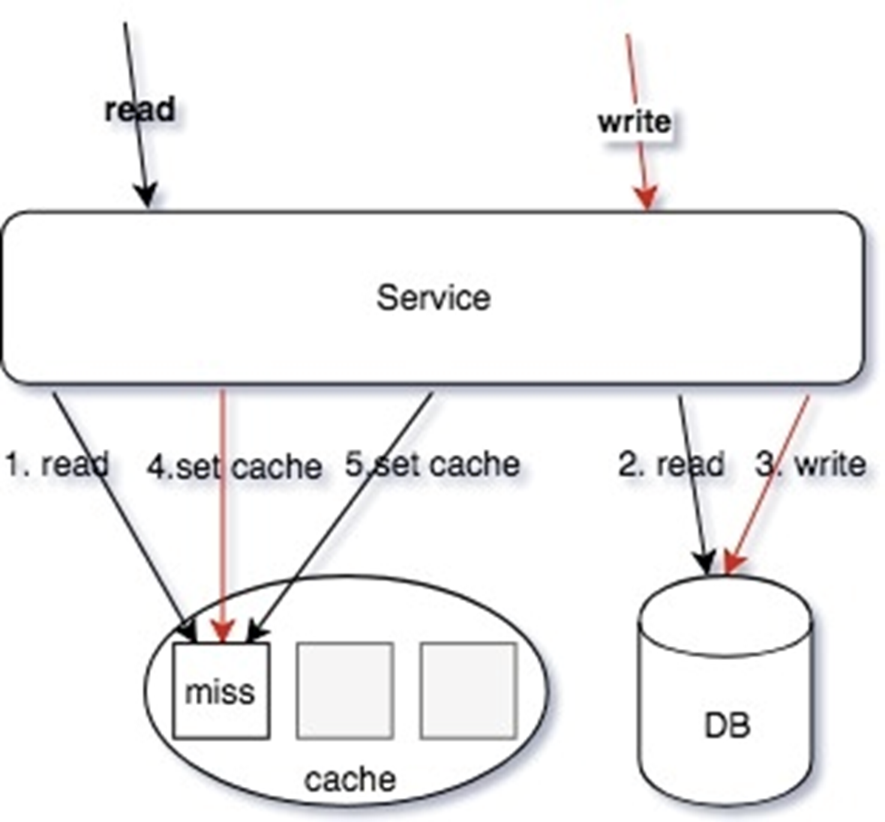
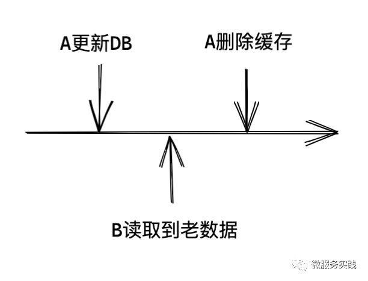
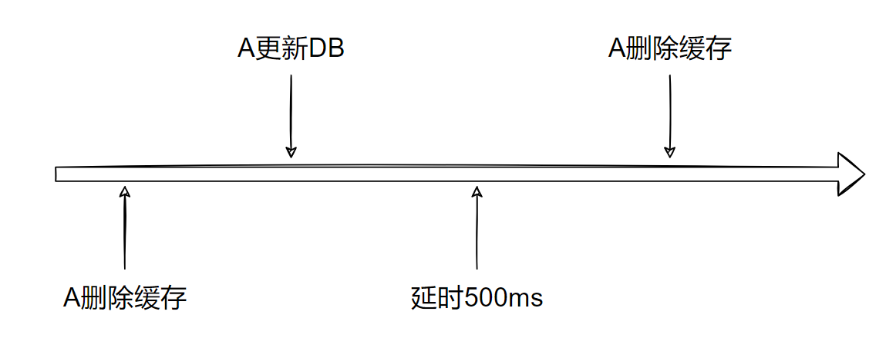

cache aside模型保持数据一致性
Cache Aside 模型中，读缓存 Miss 的回填操作，和修改数据同步更新缓存，包括消息队列的异步补偿缓存，都无法满足 “Happens Before”，会存在相互覆盖的情况。

注：Happens Before既是明确的代码执行的先后关系
DB数据被修改，缓存随即需要被修改，不过缓存一般采取直接删除的操作，不过这时就涉及到读写同时出现请求数据的问题。
先删缓存，再读DB

读/写同时操作：
- 读操作，读缓存，缓存 MISS
- 读操作，读 DB，读取到数据
- 写操作，更新 DB 数据
- 写操作 SET/DELETE Cache（可 Job 异步操作）
- 读操作，SET操作数据回写缓存（可 Job 异步操作）
这种交互下，由于4和5操作步骤都是设置缓存，导致写入的值互相覆盖；并且操作的顺序性不确定，从而导致 cache 存在脏缓存的情况。
改进：
读/写同时操作：
- 读操作，读缓存，缓存 MISS
- 读操作，读 DB，读取到数据
- 写操作，更新 DB 数据
- 写操作 SET Cache（可异步 job 操作，Redis 可以使用 SETEX 操作）
- 读操作，ADD 操作数据回写缓存（可 Job异步操作，Redis 可以使用 SETNX 操作）
解决：读操作使用 SETNX 更新缓存，写操作才用 SETEX 写缓存。这样，即使读操作在缓存Miss至缓存设置中间时间发起，最终缓存一样被写操作覆盖，达成最终一致。
注：setnx，不存在时才写；setex，写数据，带过期时间。
针对更新操作，service端直接使用“DEL”指令删除缓存，并重新写入，若service端失败，则是job进行补偿。
直接使用set更新key，若binlog订阅延迟，则数据容易出现A ——> B ——> A的情况。可能有一个操作是读了之前的数据的，被延迟投递到Kafka了。
对于缓存上，job的更新原则，采用"best Effort"，一定要投递完成此消息。
先更新DB，再删除缓存

此类型操作就有可能读到老数据。已更新的数据，需要等到A删除缓存后，再来的请求，才会把缓存更新了。 也就是说这中间出现的读请求，有可能会请求到旧数据。但最终缓存会达成一致。
延迟双删

- 删除缓存
- 更新数据库
- 延时 N 毫秒
- 删除缓存
根据上述两种方式的实际情况来看，延迟双删就没啥必要了，其核心解决的就是最终一致性的问题。
本文标题：cache aside模型保持数据一致性
文章作者：小师
发布时间：2021-09-22
最后更新：2022-05-04
原始链接：chunlife.top/2021/09/22/cache-aside模型保持数据一致性/
版权声明：本站所有文章均采用知识共享署名4.0国际许可协议进行许可